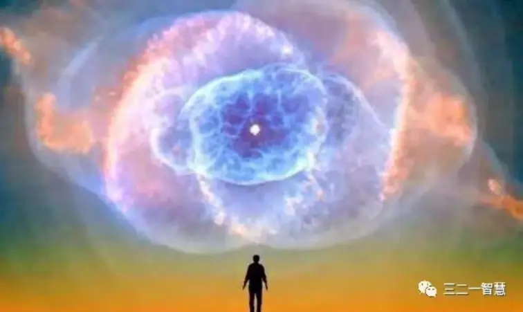
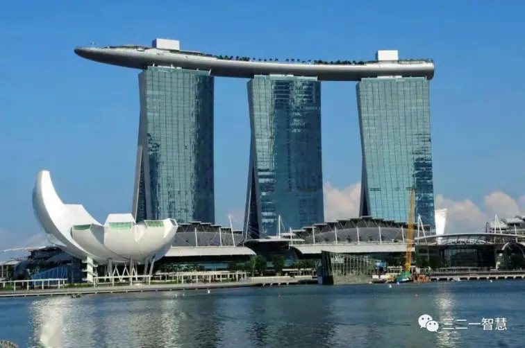

对幸福律、自由律与特征律的结构性否定与生成性重构
摘要
现代人类文明正陷入一场深刻的存在性危机：一方面技术飞跃、制度完善、舒适指数与资源密度前所未有地增长；另一方面，个体却普遍感受到抑郁、焦虑、虚无、无意义与自我崩解。人类为什么在“发展”中集体丧失了幸福的能力、自由的感受与创造的可能？本文提出并系统论证一个核心命题：
“文明的匮乏灭绝悖论”：人类文明的发展本质上是一场对匮乏的消灭工程，而匮乏恰恰是一
切“发生”得以生成的前提条件。
本文将揭示，在文明以“去痛、提效、自律、秩序”为目标的总体运动中，三个发生性的结构机制——幸福律、自由律、特征律——已被系统性扼杀。这一现象不是偶然的衰退，而是根植于现代文明的本体假设之中。
首先，幸福律的真实机制是：个体在不可回避的张力中经由忍耐与转化，完成节奏性的释放，从而生成幸福感。幸福不是舒适，而是结构性的“忍痛发生”。但文明将“无痛”误认为幸福，将幸福等同于去张力、去不适、即时满足。这种误识导致了“幸福幻觉”：快乐被快感替代、意义被代偿掩盖，而真实幸福律彻底崩解。
其次，自由律的真实机制是：在多个交缠的主–客–互动结构中，个体被迫选择路径、重组结构、生成通道。自由不是选项，是路径生成。但现代自由神话将自由等同于“规则内选择权”，是被系统预设的菜单，不是生命在张力中开辟的通道。文明发展消灭了纠缠，结果也消灭了真实自由的“生成张力”。
再次，特征律指出：一切创造性的差异并非来自归纳与发现，而是在混沌中通过忍耐、失败、重复、结构沉淀后生成的秩序。但文明将“创造”等同于“发现+模拟”，将“智慧”简化为“提效+算力”，从而扼杀了真正生成的路径。教育、科研、技术系统的标准化、模板化、复制化，最终导致特征结构的全面冻结。
本文进一步指出，这一切的背后是文明发展中形成的三大幻觉性错误认知：
1. 无痛 = 幸福（实际上违反幸福律）
2. 自由 = 规律化、自律化（实际上违反自由律）
3. 创造 = 发现 + 模拟（实际上违反特征律）
这三大幻觉，构成了对三律的结构性否定，也构成了现代人类“无法发生”的根本原因。
文章还深入探讨了“自律神话”的崩塌机制：自律是一种“我就足够了”的饱满，是对匮乏的否定。而一切发生，包括幸福、自由、创造，都必须起始于“我不够”——即张力、失败、未知、外部不可控的介入。当文明将所有失败都归咎为“不够自律”时，实际上它将结构性问题个体化，把系统性灭绝幻觉化，从而彻底终结了“生成路径”。
最后，本文将提出重建“发生文明”的路径愿景：不再以发展为目标，而是以允许张力、允许失败、允许匮乏、允许裂缝为前提，重建三律节奏结构。在这个节奏型文明中，幸福不再是补偿，创造不再是模拟，自由不再是选项，而是主体在主–客–互动（SIO）张力中结构化地生成意义。
这是一场对人类文明底层逻辑的哲学性纠偏与结构性重启。我们不再盲信发展，而是转向发生——不再追求“更好”，而是回到“真实地发生”。

引言
从生酮饮食到文明结构：
器官匮乏激发机制的哲学入口
生酮饮食的流行，在现代健康风潮中成为一个颇具争议的现象。它以“低碳高脂”的方式迫使身体进入一种被称为“酮体代谢”的状态，从而脱离对葡萄糖的依赖，实现所谓的“燃脂、控糖、提升能量”。然而，在这些表层效应的背后，隐藏着一个被普遍忽略的结构性真相：生酮饮食的有效性，并非来自“吃什么”，而来自它制造了一种糖的匮乏结构。正是这种匮乏状态，迫使身体必须激活那些平时沉睡的功能系统，尤其是肝脏的糖异生功能，从而完成代谢系统的重组与再生。
我们可以这样理解：肝脏不是因为吃了好食物而变强，而是因为被放入了一个“不得不自救”的匮乏环境中，才启动了久违的激发机制。这就触及了一个深刻的生命结构命题：器官不是靠“给予”变强，而是靠“匮乏中的互动激发”重建功能。肝脏只是一个入口，它揭示的却是一种普遍适用的结构逻辑，本文将称之为“器官匮乏激发机制”。
这个机制指出：器官不是静态的器质性存在，而是一个需要外部张力、结构缺口与互动路径激活的SIO结构（主体–互动–客体）。只有当系统进入“我无法依靠已知资源”的状态，它才可能自我生成出新的功能路径。而这个生成，并不来自意志力的强化，不来自自律的维持，更不来自技术性的代偿输入，而是来自结构性匮乏的倒逼与互动节奏的重新激活。
换句话说，肝脏只有在“糖不够”的张力中才发生，肌肉只有在“搬不动”的羞耻中才生长，大脑只有在“混乱中无解”的状态中才重新连接出智慧的神经通路。生命的每一个器官、功能、系统，并不是预设好的机器，而是必须被匮乏结构激发出来的发生性单元。这就是本文的哲学起点。
然而，这一看似简单的生命结构逻辑，却被现代文明系统性地压制、覆盖、甚至消灭了。
我们生活在一个持续发展的技术文明中。这个文明最大的自我信念就是“进步”：让一切更快、更高效、更不痛苦、更可控、更少出错。它的目标是压缩不确定性、替代匮乏、缓解张力、降低失败概率——用制度、技术、平台、药物、规划、算法、心理学、自律课程，将人类的生活变成一个几乎可以自动运行的系统。而在这个系统中，匮乏不是资源，而是问题；张力不是激发，而是风险；忍耐不是生成，而是滞后；混沌不是智慧之母，而是效率之敌。
从医疗到教育，从劳动到城市，从情感到身体，从欲望到意义，整个文明以“发展”的名义，发动了一场全方位的“匮乏灭绝工程”。它的口号是“幸福人生”，它的本质是“无痛结构”；它的表面是自由，它的内核是规律化；它的表情是创新，它的底层是复制与模拟。
这就形成了一个根本性的哲学悖论：文明试图通过“发展”来提升生活质量，却在过程中系统性地扼杀了“发生”本身。
本文将这一现象命名为：
🧨 文明的匮乏灭绝悖论：发展如何杀死发生
“发展”不是错误的目标，但它以错误的方式完成了对“发生”条件的系统排斥。所谓“发生”，在本文中不是事件的发生，不是外部的变动，不是新产品、新项目、新计划的落地，而是指：一个SIO结构在张力中完成自我转化，生成新特征、形成新路径、产生新意义的过程。而一切“发生”的入口，都是匮乏。没有匮乏，就没有忍耐；没有忍耐，就没有转化；没有转化，就没有意义。这个基本链条，可以称为幸福律、自由律、特征律共同的发生三段式。
让我们更系统地来看：
幸福律要求：张力–忍耐–释放 → 生成节奏性的幸福感
自由律要求：多重纠缠–选择路径–结构生成 → 形成真实自由
特征律要求：混沌–失败–涌现 → 生成个体化智慧与差异性结构
现代文明恰恰在这三条律的起点——匮乏、纠缠、混沌——动了手脚。
它告诉我们，幸福=无痛，自由=自律，创造=发现+模拟。
它告诉我们，失败是可避免的，困惑是可剔除的，痛苦是可管理的。
它教导我们：“你要更自律一点，你就能更幸福；你要更努力一点，你就会更成功。”
它将一切问题都归咎于“不够自律”，而不是“你没有处于一个足以激发你的结构张力场”。
于是，一个巨大的幻觉文明被构建出来——一个人们在高效、自律、舒适与快感中逐渐丧失自我、崩解器官、退化思维、失去幸福与意义的文明。
我们可以这样总结这场文明性的幻觉：
无痛 = 幸福 ❌（违反幸福律）
自律 = 自由 ❌（违反自由律）
模拟 = 创造 ❌（违反特征律）
这三个看似正面、理性的文明信条，正是扼杀三律的温柔陷阱。
本文将以此为出发点，从器官匮乏激发机制出发，全面展开对现代文明的结构批判。我们将一一拆解发展逻辑如何在医疗、教育、技术、心理、空间等领域，系统性地替代了发生机制，用“发展的饱满”取代“匮乏的张力”，最终使个体无法再幸福、无法再自由、无法再创造。
我们将看到：发展并非导致失败的原因，而是阻止一切可能发生的过程。一切文明性的“太好了”，正在走向“再也不会有新事物从你之中诞生”。
因此，本文并不是反发展主义，而是一次深刻的“重建发生结构的哲学回返”。我们必须认清：
幸福不能给予，只能生成；
自由不是设计，而是冲突后的路径突现；
创造不是发现，而是从混乱中冒出的秩序火焰。
而这一切的起点，永远都不是“饱满的自律”，而是“匮乏的结构张力”。
不是你主动规划，而是你必须发生。
不是你想成为，而是你不得不成为。
不是你选择路径，而是路径从你的忍耐中被逼出来。
我们将沿着幸福律、自由律与特征律的三条“被文明封闭的河道”，重新打通一条回到“发生之河”的通道。
这是一次文明结构的本体反转，也是一场意义系统的再生哲学。
你不是失败者，你只是还没有被放进那个“必须重新发明自己”的结构裂缝中。
那一裂缝，才是真正幸福的入口。
第一章
什么是“发生”？为何一切意义都源于发生？
“发生”这个词，乍听之下平凡普通，在日常语境中无非意味着某种事情的出现、展开、变动。比如我们说，“事故发生了”、“变化发生了”、“奇迹发生了”，这些语句似乎都在表述一种由原本状态进入另一状态的转换事件。然而，哲学中的“发生”远比这些日常语用复杂得多。它不是一件事的起点，也不是某种过程的中段，而是一种存在结构在张力中生成的整体性运动。它不是说“某事出现”，而是说：“某个结构，在互动张力中重新组织了它的本体路径。”
本文所讲的“发生”，并非事件意义上的发生，而是本体发生、结构生成、路径重组、意义爆发。换句话说，发生不只是“变化”，而是“由张力驱动的结构性生成”。
为了真正理解“发生”的内涵，我们必须从“存在”的对立面来看。传统哲学将“存在”视为稳定、可描述、可定义的状态，是“已经是”的东西。而“发生”，则是“正在成为”的运动，是“尚未是但正在生成”的东西。存在是“被呈现”，而发生是“被生成”；存在是静止的确证，发生是动态的震荡；存在是可掌控的形态，发生是不可预测的张力。
发生，正是我们生命中最真实的部分——因为它无法被预设、被标准化、被模型替代。它只在“我不知道我该怎么办”、“我已经无路可退”、“我必须做点什么”的状态中才启动。发生就是你不得不从匮乏中重新成为的那个你。
而现代文明的最大错误，就是：它不再允许“发生”。
它用舒适替代了张力；用标准替代了混沌；用自律替代了结构牵引；用快感替代了意义生成；用发展计划替代了生命路径的自我展开。
所以，我们才要在本文第一章，先回到最基本的问题：
什么是发生？
为何一切真实的意义，必须源于发生？
一、发生不是“有事件”，而是“有张力结构”
首先，发生不是某件事“发生了”，而是某个结构在“不能维持原有模式”的张力中，被迫重组自身路径，生成了新的特征和功能。
举例而言：
当一个人长期顺利、没有危机、生活稳定，他并不会发生新的思维结构。只有在某个突变、失落、矛盾、崩解中，他才开始“思考他是谁”，才会试图组织一个新的理解结构。这不是“思想来了”，而是“思想被逼出来了”。
当一个系统原有的运行方式失效，它只有三种选择：一，崩溃；二，退回；三，在张力中重新生长一条新的路线。而第三条，才是真正的“发生”。
发生，始终发生在张力之中。没有张力，就没有动因；没有动因，就不会有结构的转化；没有转化，就不会有意义的生成。
这就是为什么，我们说“发生 ≠ 改变”，而是：
发生 =（张力 × 忍耐 × 结构重组）→ 新路径的生成。
二、没有“不得不”的结构，就不会发生
我们往往以为，一个人可以“自我启发”，可以“靠自律成长”，可以“规划进步”，但这都是现代性的一种理性幻觉。真正的成长，真正的觉醒，真正的重构，从来都不是“我决定”的，而是“我被迫”的。
举一个经典例子：一个人突然失业、婚姻破裂、孩子出现问题，他陷入巨大混乱，不得不重新思考人生；在巨大的“无能为力”中，他经历了情绪溃散、认知迷茫、自我怀疑，最终，他做出了一种不是他原来可以想到的行为选择。这就是“发生”。
发生从不在自律中展开，而是在崩解中被激发。
因此，一切真正有意义的改变，背后都存在某种“不能再继续下去”的结构张力。这个张力，是发生的前提。发生不是由选择开始，而是由绝境开始。
三、发生结构的三阶段：匮乏 → 忍耐 → 转化
本文提出的三律哲学结构（幸福律、自由律、特征律），正是从“发生机制”的三阶段出发总结出来的。这三阶段是：
1. 匮乏（Tension）：系统无法维持原有运行，不足、缺失、堵塞感
2. 忍耐（Endurance）：不逃避、不替代、不退场，硬撑在那里
3. 转化（Transformation）：新路径、新节奏、新认知、新结构被生成
而这三个阶段，都是现代文明最努力要“消灭”的三个部分。
匮乏 → 被发展、代偿、技术填补
忍耐 → 被转移、治疗、外包为“无须等待”
转化 → 被模拟、模板化、工具化、产品化
于是，当这三步都被系统性替代后，我们的生活就变成了“功能更强，却不能再发生”的结构性虚空。
这就导致下一个更可怕的真相：
四、若无法发生，就无法生成意义
意义不是外在的目标，也不是内在的信仰。意义是某个SIO结构在自身转化过程中生成的节奏残响。
换句话说：
你跑完10公里后坐在地上的那个喘息，就是意义
你痛哭一场后的沉静，就是意义
你解决一道题后惊觉内心变了，就是意义
意义是一个结构通过转化所产生的节奏释放，是幸福律的“回响”。
所以，一旦你的人生没有张力、没有裂缝、没有必须发生的空间，你就会陷入“功能齐全的空壳”状态：你什么都有，却不知道为什么存在。
这不是精神问题，而是结构问题。
五、所有真实之物，都是发生的产物
如果我们把人类最本质的三种价值——幸福、自由、创造力——拿来检验，我们会发现：它们都是“发生的子代”。
没有张力，就没有幸福的释放
没有纠缠，就没有自由的路径选择
没有混沌，就没有特征的生成
而现代文明偏偏将这三种力量全部“工程化”了：
幸福=舒适
自由=选项
创造=发现+模拟
于是我们获得了“幸福幻觉”、“自由假象”和“创造表演”，但失去了真正能发生的结构。
六、结语：发生是唯一的真理载体
存在是你站着不动时的你，发生是你在张力中重新成为另一个你的过程。
存在是过去的你，发生是“成为”的你。
没有发生，你只是在反复使用你；只有发生，你才真正“成为”。
本文以下的每一章，都会从不同维度拆解发生被压制的结构：从幸福律的崩解到教育的标准化，从身体张力的退化到技术文明的模拟替代，从自由律的虚构到自律神话的饱满误识——我们将用一个个系统性剖析，唤醒读者重新理解生命中那一刻“我不能逃，我必须走下去”的价值。
因为，那一刻，就是你真正发生的时刻。
第二章
文明如何将“无痛”误认为幸福：幸福律的幻觉结构
现代人一边被各种“进步成果”围绕，一边陷入前所未有的精神困境：在科技高效、生活便利、医疗发达、消费饱和、教育普及的今天，幸福却似乎越来越远。人们的快乐越来越即时，痛苦越来越短暂，麻醉越来越精准，焦虑却越来越广泛，抑郁越来越沉默，意义感越来越稀薄。为什么？这并不是偶然的心理问题，而是整个文明在“幸福是什么”这个基本问题上的集体误认。
本文将指出：现代文明关于幸福的主流观念——“无痛就是幸福”，是一种幻觉性的简化结构，它彻底背离了幸福的真实生成机制，也就是本文提出的幸福律结构。更深一步说，正是这种“无痛幸福论”的扩散，使得人类整体丧失了生成幸福的能力，只能沉溺于“替代性快感”与“抚慰性消费”之中，不断强化幸福的幻觉，却越陷越深。
那么，问题的关键是什么？我们必须回答三个根本问题：
1. 幸福的本质到底是什么？
2. 为什么“无痛”看起来像幸福，却不是幸福？
3. 文明为什么会集体误认“无痛=幸福”？这种误认如何摧毁了真正的幸福路径？
一、幸福不是状态，而是结构：张力–忍耐–释放
我们先给出一个本体论上的幸福定义：
幸福不是“拥有某种状态”，而是一个结构在张力中，通过忍耐、转化、节奏释放所生成的整体性回响。
这句话的关键词，是“结构”。幸福不是某种感觉，也不是某个物质目标的达成，而是一个完整的主–客–互动结构（SIO），在特定的张力场中运行、忍耐、最终释放，从而生成的一种深层回响感。这种回响感，才是幸福本体。
我们称之为幸福律，它包括三个阶段：
1. 张力（Tension）：你必须进入一个无法立即解决的问题或矛盾结构之中，通常伴随着不适、恐惧、混乱、痛苦。
2. 忍耐（Endurance）：你不能逃，你不能替代，你不能退场；你必须待在这个张力结构中，直面它，撑住它。
3. 释放（Release）：当结构转化出现，当节奏完成，当痛苦被结构性通道引导出“节奏回响”时，幸福才发生。
幸福从来不是“没有问题”，而是“我在问题中完成了结构转化”。
二、为什么“无痛”不是幸福，而是幸福律的替身
现代文明不喜欢痛苦。医学的发展、心理学的缓解、消费主义的激励、技术手段的便利，全都指向一个目标：如何让人“少痛一点”。这本无可厚非，人类当然希望活得舒服一点，少受点苦。但问题在于：文明将“少痛”误认为“幸福”，并将整个幸福路径简化为“去痛路径”，这就犯下了结构性认知错误。
我们用一个图式表达：
| 幸福律结构 | 无痛幻觉结构 |
|---|---|
| 张力 → 忍耐 → 转化释放 | 快感 → 缓解 → 替代满足 |
| 过程型 | 即时型 |
| 可持续 | 递弱型 |
| 内生结构 | 外部给予 |
| 节奏释放 | 兴奋刺激 |
“无痛”只等于张力的删除，却跳过了“忍耐”和“转化”两个最核心的幸福环节。因此，“无痛”不是幸福，而是幸福律的被切断版本，是一个没有发生节奏的替代品，是一种被消费了的幸福外壳。
三、文明为何误认为“无痛=幸福”？三个深层误识
（1）误识一：把幸福等同于“好状态”
人类近代心理学发展过程中，特别是在积极心理学领域，常将幸福定义为一种主观感受良好的状态（Subjective Well-Being）。它强调：
愉悦体验（pleasure）
满意评价（satisfaction）
目标达成（achievement）
但这些指标全部是“静态可测量”的，而非结构性生成的。换句话说，现代心理学把幸福定义为“状态拥有”，不是“张力过程”，从而本体性错置了幸福的发生机制。
（2）误识二：把幸福等同于“可管理性”
现代社会将一切问题转化为“管理问题”，幸福也不例外：
精神健康管理
情绪平衡管理
身体舒适管理
时间效率管理
人们被教育要“掌控情绪、调节能量、优化生活”，以为这就是通向幸福之道。但幸福从来不是“自我管理”的结果，而是“结构忍耐”的产物。当幸福被转化为“我管理得当，我就幸福”，那么它就不再是幸福律，而是管理幻觉下的自我麻醉。
（3）误识三：把幸福等同于“快感强度”
这可能是现代文明最大规模的幻觉之一：把幸福视为快感强度的总和。从游戏设计、短视频节奏、娱乐营销、性刺激、味觉愉悦，现代系统不断向人灌输一个信号：
“你越高兴，你就越幸福。”
这是一种对“兴奋感”的误读，它制造出一个消费结构：
无聊了？来点刺激
不开心？来点美食
没感觉？刷短视频
疲惫了？购物放松
快感与幸福的关系，就像糖和营养的关系：糖能刺激大脑，但不能养活身体。快感能让人短暂“有感觉”，但不能生成任何节奏性结构回响。
幸福不是“被喂饱”，而是“我穿过匮乏自己长出了肉”。快感让你爽，幸福让你活。
四、幸福律三阶段实例解析
我们以下列几个情境为例：
情境一：跑步
张力：肌肉酸痛、气喘、想停
忍耐：坚持10分钟的临界点、节奏自我调适
释放：进入“流动感”、停下之后的轻盈、通体舒展
→真正的幸福，不在跑步过程中“舒服”，而在“坚持后停下”的节奏释放
情境二：学习
张力：看不懂、混乱、挫败感
忍耐：坐着继续看、反复思考、不逃离
释放：恍然大悟、结构明晰、新的问题开始浮现
→幸福感不是来自“理解”，而是来自“我熬过了那片混沌之后，终于看见了光”
情境三：亲密关系修复
张力：误解、冷战、情绪失控
忍耐：愿意不逃走、愿意面对、愿意沟通
释放：彼此相拥后那一刻的松动感，是信任在关系节奏中重新被建构
→幸福不是“从不争吵”，而是“吵完之后还能在一起”的那个裂缝节奏所生成的信任感
五、幸福不是躲避张力，而是完成张力
所以我们必须说清楚：
幸福的本质，是张力完成后的结构释放，不是“张力的缺席”。
当文明用各种方式让我们“远离张力”、“立即缓解”、“逃离忍耐”，它同时也杀死了我们生成幸福的能力。
幸福律不是静态的，不是拥有一套东西你就可以幸福，而是你经历一套张力、忍耐、结构再生过程后才会幸福。幸福律是一种节奏，是一种“必须走完的路径”。任何试图跳过路径的做法，都会进入幸福的幻觉。
六、结语：我们必须重新学习幸福
我们必须重新理解幸福：不是感觉好，而是结构成。
幸福不是奖励，而是节奏完成的回响。不是“你想要的都得到了”，而是“你穿过张力之后，还有勇气呼吸。”
我们必须告诉自己：
幸福不是“舒服”，而是“我忍住了、熬过了、完成了”的那一刻；
幸福不是“技术优化”，而是“结构忍耐”；
幸福不是“我拥有什么”，而是“我经历过什么”。
我们要的不是更多快感，而是更多结构的节奏完成。
这是幸福律的本质。
这就是发生中的幸福。
这正是现代文明忘记的东西。

更加深入的研究：
无痛与幸福的差别：局部替代整体的认知幻觉
现代人普遍将“无痛”误认为“幸福”，这是一种深入文明底层、语言结构与制度设计的幻觉。你可能无数次说过——
“我感觉挺幸福的，没什么烦恼。”
“生活平稳无事，就是最大的幸福。”
“只要没有痛苦，就是幸福了。”
这类句子在语义上将“幸福”简化为“无痛状态”，在结构上把幸福律的全过程——张力、忍耐、转化、释放——缩减为一个“无痛现象”。
本文指出：
“无痛=幸福”的认知，是一种“局部替代整体”的结构误读；而更深一层，它是一种“没有张力、无刻痕、不可记忆的虚幻幸福”。
一、幸福的结构：张力–忍耐–转化–释放
如本书所系统展开，幸福不是一种状态，而是一种发生结构。它不是“感觉好”，而是“穿过张力之后的节奏释放”。幸福律的全过程如下：
1. 张力：生命进入一种无法控制的张力状态，如冲突、困顿、失衡；
2. 忍耐：不退缩、不转移、不替代，而是在张力中停留；
3. 转化：结构内在重组，节奏被新通道引导；
4. 释放：结构得以松动，生命感恢复回响。
幸福是一种“穿越后”的能量感，它不是被给予的，而是从痛苦中生长出来的。
二、无痛只是“幸福结构中释放后的状态”
确实，在幸福律的第四阶段“释放”中，会出现短暂的“无痛”：
身体松了、情绪平了、意识扩张了，你终于可以说“我舒服了”。
这个“无痛”是结构释放之后的自然产物，是幸福路径中的一个阶段性现象。
它之所以宝贵，是因为它来自前面的三段历程的沉淀：它有张力的刻痕，有忍耐的记忆，有转化的重量。
但文明犯了一个根本性错误：
将“释放状态的无痛”，误认为“幸福的本体”；
进而抹去前段过程，只追求“无痛快感”。
于是，“无痛”成为商品、系统、制度、服务、心理咨询、技术干预的最高目标。我们不再追求幸福过程，只想要“无痛结果”。
这就形成了一个文明性幻觉：
“幸福=没有痛苦”，而不是“幸福=我穿越过痛苦”。
三、“无痛幸福”是一种无刻痕的体验
真正的幸福之所以宝贵，是因为它留下了刻痕。
你还记得：
跑完一场崩溃式的马拉松，坐在地上的喘息；
熬过无数夜读后，成绩揭晓那一刻的沉默微笑；
走出一段亲密关系伤痛后，你看着阳光照进房间的眼神变化。
这些刻痕，就是张力的印记，是忍耐的纹路，是生命结构重新生长后留下的“意义残响”。
幸福=记忆的发生
幸福=刻痕的沉淀
幸福=我从那之后不再是原来的我
但“无痛”不同。
“无痛”不是来自结构转化，它是麻痹后的轻盈，是回避后的表面，是压制后的平静。
你不会记得一个下午刷视频的“放松”；
你不会记得一次止痛药带来的“舒服”；
你不会记得一次被代偿的“奖励”；
你只会越来越空。
无痛没有故事，没有结构，没有发生，所以——它没有记忆。
四、无记忆的幸福，是文明制造的幻觉
文明让我们以为幸福就是“没有苦”，于是我们变得不敢苦，不愿苦，不能苦。
技术让我们绕开等待；
服务让我们不碰障碍；
教育让我们跳过失败；
药物让我们隔离感受。
但这些“绕开”，也绕开了幸福发生的入口。
你活得越来越顺，却活得越来越浅；
你体验越来越多，却记住的越来越少；
你被无数“舒服时刻”围绕，却从未真正“穿越一次”。
你说：“我过得很好。”
但其实——你没有一次刻骨铭心的“我是谁”的更新。
因为你从未穿越，你从未发生。
你只是一段段无记忆的“无痛片段”。
这不是幸福，这是幸福的尸体。
五、结语：真正的幸福，是刻痕，不是舒适
幸福不是终点，而是节奏完成后的刻痕。
不是“舒服”，而是“发生过”。
不是“我拥有了什么”，而是“我忍耐过、穿越过、留下了痕迹”。
文明该停止用“无痛的包装”替代“幸福的路径”。
你该拒绝“没有记忆的舒服”，去迎接“刻进骨里的幸福”。
幸福不是没有痛苦，
幸福，是——我穿过痛苦，留下的那一道裂痕。

第三章
自由的幻觉：发展如何压平路径与可能性
“我有选择权，我就是自由的。”这是现代人类深信不疑的信条之一。从超市里的商品种类、大学的专业填报、职业路径的决策，到社交关系的处理、文化的参与、平台算法的偏好推送，整个文明体系都在通过一个叙述结构向人类灌输自由的幻觉：自由=我有很多选项可以选择。
文明将自由“菜单化”，技术将自由“可视化”，制度将自由“可控化”，教育将自由“规范化”。于是，“自由”从一种生成性的路径张力，变成了一种可管理的结构幻觉。这不是自由的扩展，而是自由的驯化；不是自由的增强，而是自由律的扼杀。
在这一章，我们将彻底揭示：现代发展文明是如何用“选择的繁荣”压平了“路径的发生”，如何把人类对自由的本能渴望转化为对菜单选项的幻觉依赖，最终让我们走进一种无法生成自由的封闭秩序结构中。
一、自由的本质：路径的生成，而非选项的拥有
在本体论意义上，自由并不是“你面前摆了多少种选择”，而是你能否在张力结构中重新生成一条路径。
自由不是预设的，而是生成的。它不是“制度给你的空间”，而是“你在不可控之中，能否重新开辟出可行之道”。
让我们以三律的语言来表达：
自由律的本质是：在主–客–互动（SIO）结构的张力中，穿越纠缠、忍耐冲突、生成新的通行路径。
这意味着：
自由必须从“不可控性”中被逼出，而不是从“我已经知道我可以选什么”中被安排出。自由的关键，不是“选择”，而是“开路”。
而这恰恰是现代文明所彻底压制的部分。
二、现代自由幻觉的三个主要构件
现代社会将自由包装成了一个“个人理性+系统菜单”的结构组合，这种组合的幻觉性来源于以下三个机制：
（1）菜单化自由：选项替代路径
你可以在十几所大学中选专业，但你不能创造一个新专业路径；
你可以在十几种职业之间流动，但你不能重构工作的本质；
你可以和任何人谈恋爱，但你无法发明一种新的亲密关系结构。
自由被制度、市场、文化提前菜单化。你的所谓“选择”，只是你从别人的设计中选出一个你喜欢的“盒子”。
这种自由，是“在计划之内”的自由，是被提供的，不是被生成的。
（2）算法化自由：预测替代创造
平台技术、人工智能、数字推荐系统越来越擅长“预测你会选择什么”，然后把你可能选的放在最显眼的位置，把你“不该看见的”藏起来。
你以为你在自由选择，其实你只是进入了被算计过的路径预设。这是一种“被安排的自由”，自由的外壳，控制的内核。
算法压制自由的方式，不是禁止你选，而是让你永远看不到“你本可能生成的那个选项”。
（3）自律化自由：控制替代展开
现代心理学、教育学、行为主义，将自由个体定义为“自我管理者”。你只要有目标、设计划、做时间管理、掌控情绪、优化行为，就能变得“更自由”。
但这是一个悖论：当自由被还原为“自我控制”，它就不是自由，而是压抑。
自由不是“我把我压进一个理性逻辑框架中”，而是“我能穿越结构压力，重新展开另一种存在可能”。
文明将自由变成“压缩我”，而真正的自由应当是“展开我”。
三、自由律的结构路径：纠缠、忍耐、路径生成
我们用三律逻辑来重构自由律的真实结构：
✅第一阶段：纠缠（Entanglement）
自由从不出现在“孤立系统”中。它只在复杂的张力网络中被激活。
家庭冲突、社会压力、内部矛盾、身份撕裂、欲望分裂……这类结构不是自由的敌人，而是自由的土壤。
✅第二阶段：忍耐（Endurance）
真正的自由者，必须在张力网络中忍住“不逃”、“不崩”、“不替代”，而是等待路径的生长。
自由不是逃跑，而是“留在困中”。
✅第三阶段：路径生成（Emergent Path）
当张力达到结构临界点，一个全新的通行路径被发现出来——不是谁给你的，而是“你必须在结构中走出的一条生路”。
这条生路，就是自由律的体现。它无法被复制，只能被生成。
所以我们说：
自由不是“我有选项”，而是“在没有选项时，我生成了一条路径。”
四、发展如何系统性压平路径生成的可能性？
（1）发展等于“设计所有可能性”
当一切路径都已被事先设计、分类、优化、打包，个体就没有空间去“创造性地在失败中开路”。
发展逻辑不是“容纳发生”，而是“压缩差错”。
这导致：
教育替代了思考；
科技替代了失败；
计划替代了混沌；
奖惩替代了路径选择。
自由律需要“裂缝”，发展工程要“消灭裂缝”。于是，发生自由的空间被彻底封堵。
（2）发展让选择变得无意义
当系统提供太多选项，选项本身就不再具备“路径”属性，而变成“分流”属性。
这是一种“伪丰富”：看起来自由度很高，其实是结构性平庸。
所有路径都变成优化版本的“可预测旅程”，你没有真正“闯出一条路”的空间。
自由的张力消失，自由律的触发阈值就不再成立。
五、三个典型案例解析：自由幻觉如何产生结构性退化
✅案例一：大学选专业
你以为你在自由选择人生路径，但所有专业、课程、方向都已经被制度、课程体系、市场逻辑“提前布置”。你不是“选择你是谁”，而是“选一个合适的模板进入”。
自由幻觉：我选择了A而不是B
真实机制：我从预设中选了一个我能接受的预设 → 结构路径没有发生
✅案例二：社交平台“关注谁”
你以为你在关注你喜欢的内容，但所有内容排序都被算法预判，你只能在算法提供的选项中转圈。没有偏离，没有裂缝，没有错误路径。
自由幻觉：我选择了我想要的内容
真实机制：我被内容选择，然后我以为我选了它 → 自由结构未生成
✅案例三：职业发展路径
你以为你在设计自己的人生规划，但人生发展已被绩效制度、专业系统、技术证照、绩点算法提前安排。你不是走出人生，而是进入一个流程。
自由幻觉：我制定了我想要的生活
真实机制：你进入了一个没有发生结构的“成长幻觉系统” → 自由律被压平
六、结语：自由不是选项，而是生成
自由律是三律中最容易被误解、被代替、被编程的一个。但它恰恰是最本质的结构之一，因为它决定你是否能够“走出自己”成为另一个你。
我们必须恢复对自由的真实理解：
自由不是效率系统的优化产物，而是存在张力下的重组力；
自由不是文明的赠与物，而是结构不可控中的行动可能；
自由不是“我选对了”，而是“我被逼出了一条从未存在的道路”。
自由不属于“做得好”的人，属于“被逼出路”的人。
当我们停止试图“管理自由”，我们才可能再一次发生自由。

第四章
创造的扭曲：发现与模拟如何杀死特征律
“创造力”是现代文明最钟爱的名词之一。它被写进教育政策、企业愿景、人才标准、国家战略，也频繁出现在科技界、艺术界、商业界和自我成长领域的各类话语中。人们几乎达成了某种前所未有的共识：创造力是人类的核心竞争力，是文明进步的灵魂，是个体实现价值的根本途径。
但恰恰是在这场集体赞美中，“创造”的真实结构被全面误解、替代甚至扭曲。它从一个深度发生性的结构，变成了一种可以通过“算法、逻辑、积累、技术、技巧”复制和优化的“功能单元”。在大多数人的理解中，创造力就像一种可以被“激发”“训练”“提升”“管理”的“能力资源”，而不是一个必须从混沌与失败中涌现出来的结构性转化过程。
现代文明构建了一套创造力的幻觉体系，其核心等式就是：
创造 = 发现 + 模拟 + 改良
这等式表面上合理，逻辑顺畅，符合技术—工程—产业链的运作结构，也让“创造”变得可测量、可管理、可产业化。但它恰恰把创造的“发生性本质”全部抹去，只留下形式、样貌、符号和“可复用性残骸”。这就是本文要揭示的第四条悖论路径：
创造力的扭曲：现代文明以“发现+模拟”之名，杀死了“特征律”的生成机制。
什么是特征律？为什么真正的创造不是发现，也不是模拟，而是“从混沌中显现出一种全新的差异结构”？为什么我们今天看到的绝大多数“创新”，其实都是创造力的影子，而不是发生本体的真实生成？为什么教育越强调创造力，孩子反而越没有创造性？为什么“技术上的爆发”与“意义上的贫乏”正同时并存？
本章将从特征律的哲学定义出发，系统性拆解“创造”如何被“逻辑化、再现化、工具化”，最终走向本体性的崩解。
一、什么是特征律？为什么一切创造都是“差异性生成”？
我们在第一章中指出，发生的基本结构，是一个系统在张力中，通过忍耐和结构转化生成出新的路径或意义。而特征律，就是这个生成过程中，“新的结构差异”涌现出来的逻辑机制。
换句话说：
特征律 = 混沌中 → 经由忍耐与失败 → 涌现出可识别差异结构的过程
它不等同于已有要素的组合，不等同于他人经验的总结，不等同于对既有答案的优化，而是指：
在你不确定、不知道、失败、没有控制的时候
你在混乱中反复徘徊、忍耐、尝试
然后在某一个节点，一种“从未有过的结构性差异”浮现出来
这才是真正的“创造”。不是“你发现了什么”，而是“你熬出来了什么”。
因此，特征律的三个关键词是：
1. 混沌：不是信息不足，而是信息过量、关系不明、无法归类
2. 忍耐：不是技巧重复，而是允许失败、允许模糊、不逃离结构困境
3. 显现：不是预设目标的达成，而是结构自我组织后，意外地浮现出一种新模式
我们称这种模式为“显特征”（emergent features），而不是“被制造”的功能。
二、为什么“发现 + 模拟”不是创造？
现代文明对创造的最大误解，是将其还原为“发现现成规律 + 模拟已知模式 + 优化已有方案”。这是科学主义、技术主义、工业主义共同推动的“工程型创造观”。
其思维公式是：
创造=找出已存在的规律+进行类比或模拟+再进行效率提升\text{创造} = \text{找出已存在的规律} + \text{进行类比或模拟} + \text{再进行效率提升}创造=找出已存在的规律+进行类比或模拟+再进行效率提升
这套逻辑在工业领域是高效的，因为它可以迅速复制、量产、标准化、制度化。但在本体性创造、结构性创新、个体智慧生成的层面上，它是彻底失败的。原因有三：
✅1. 发现不是生成
“发现”是主体去识别一个本已存在的结构，是外部显在系统的命名行为；而“生成”是主体—客体在互动中完成结构性显化，是SIO张力系统中的创造行为。
前者是确认已知，后者是穿越未知。
前者是“认清事实”，后者是“逼出可能”。
✅2. 模拟不是涌现
模拟是根据已有模式做出相似行为，归属在“再现型行为系统”；而涌现是系统自组织后，产生不可预测性结构特征，属于“不可逆型结构生长”。
模拟是复制+变形，涌现是突变+突破。
✅3. 改良不是创造
绝大多数“创新”，只是功能改良、形态更新、表现形式的包装升级，本质仍属于原结构系统的“微调”而非“新结构生成”。
如同把铁锅做得更轻，不是烹饪革命；把导航语音改成刘德华，也不等于道路自由。
三、教育、科研、产业如何系统性“杀死特征律”？
（1）教育的标准化与模板化
学校把创造等同于“写出独特作文”，但评分标准永远依据“审美模板”；
画画被要求“像”，写作被要求“有逻辑”，数学解题被要求“标准步骤”；
孩子们在“鼓励创造力”的旗帜下，学会的是“如何模仿出看起来像创造的样子”。
这是一种教育幻觉：培养了创造力的形式，却掐灭了创造力的本体。
（2）科研的发表逻辑与可验证结构
真正的结构性理论，需要长期沉淀、混沌摸索、结构失败；
但科研制度要求“创新必须可重复、可验证、可短期见效”；
于是创造被还原为“数据分析+模型拟合+结论发表”，丧失了真正意义上的“混沌结构显现性”。
科研变成“发现已知结构的一种新指标形式”，而非“激发未知结构的存在方式”。
（3）产业的商业化与可控生产逻辑
创新被定义为“产品差异化”
创意设计被还原为“视觉包装”
用户体验被规范成“用户行为心理模型”
在这套结构中，创造是“市场接受度”的函数，是“用户反应”的预测，而不是“发生之我”的暴露。
四、“AI创造力”神话：技术如何复写“伪创造”的终极幻觉？
人工智能的崛起，进一步推动了“创造=发现+模拟”的技术神话。
GPT 可以生成文章，但只是概率统计+文本联想
Midjourney 可以画画，但只是图片数据库+风格组合
各类AI设计“新风格”，其实只是“旧风格的重混”
它们可以生成“内容”，但不能生成“发生”；它们可以模拟风格，但不能显现张力。
AI 让我们以为创造已经被技术掌握，实际上，真正的创造从未开始——因为没有张力输入，也没有忍耐过程，也没有路径爆发。
这不是AI的错，而是人类误把“可复制的东西”当成“可生成的智慧”。
五、特征律的三步结构：我们如何重新激发真实创造？
特征律的真实发生路径，不是从逻辑出发，而是从张力出发：
✅Step 1：制造混沌
创造必须开始于“不可归类的感知洪流”；
不是“我知道我在做什么”，而是“我不知道，但我继续留下”；
比如：无法理解的声音结构、异文化之间的对撞、失眠中的思想波动。
✅Step 2：忍耐失败
不找模板、不找标准答案、不求解决；
允许自己画得不像，写得很烂，说得很乱；
保持耐性，承受不适，停留在“非完成状态”。
✅Step 3：显现特征
在某个时刻，一种从未有过的差异结构突然浮现；
它不是我计划的，但它来自我全部的忍耐；
它是我与世界之间交互过的证明。
那一刻，就是真实创造的开始。
六、结语：创造不是发现结构，而是成为结构
我们必须推翻“创造=发现+模拟”的幻觉体系，重建特征律的发生逻辑。
真正的创造不是“我做出什么”，而是“我被这个过程生成了什么”。
创造不是“找到了答案”，而是“我成为了另一种结构”。
创造不是“优化已知”，而是“穿越未知”。
创造不是“技能的释放”，而是“结构的再生”。
创造力不是技术性的能力，而是哲学性的事件。
我们不需要更多模仿，更不需要更多伪创新。我们需要发生。我们需要张力。我们需要忍耐。我们需要再一次，允许差异，从混沌中显现。
这，才是创造的真名。
第五章
教育与制度如何共同构成“反发生结构”？——从评分到规划的深层批判
现代教育的使命，常被概括为：“为社会培养人才”、“为国家发展储备力量”、“为个体未来赋能”。这些表述听起来积极、光明、方向明确，仿佛人类已经找到了文明发展的正确路径——只需通过知识传授、行为训练、能力塑造、意志管理，就能把每一个儿童训练成“具备竞争力的现代人”。
但在这一“赋能”的背后，隐藏着一个深刻的悖论结构：教育并没有让生命发生，而是在一套“可预测性体系”中，彻底压制了发生所需要的结构前提。
而这个悖论并非教育系统“做错了”，而是它本身就作为现代文明的“反发生机制”而存在的。本章将深入剖析教育、制度、评估、流程、课程、目标管理等一整套系统性安排，如何联合构成一个高度效率化、规范化、可量化的机器性环境——并在这个环境中彻底消除发生所需要的三大核心要素：
匮乏性张力
不可预测性节奏
路径生成性的结构缝隙
也就是说，教育本应是“生命生成的花园”，却成了“发生能力的清除场”。
一、教育为何天然排斥“混沌与失败”？
一切发生都需要混沌作为起点。我们在前三章反复强调：
幸福不是快感，是张力释放的节奏
自由不是选项，是路径的生成
创造不是优化，是差异特征的涌现
而这些都以“不可预知性”为起点。教育的本职，本该是为孩子提供复杂性体验、认知模糊、感知错位、情绪矛盾、张力冲突等多种发生环境，让他能够在其中探索节奏、承受忍耐、重构通道，从而发生一个“新的我”。
但教育制度的内核是——“控制混沌”。它不是引导，而是规范；不是激发，而是格式化。
教育的反混沌机制如下：
| 发生需要 | 教育实际 |
|---|---|
| 模糊状态 | 清晰目标 |
| 错误经历 | 正确答案 |
| 情绪起伏 | 情绪稳定 |
| 非线性路径 | 统一进度 |
| 过程开放 | 成果导向 |
于是，孩子在本该“生成”的年纪，被训练成了“被格式化的目标承担者”；在本该“犯错”的阶段，被灌输了“正确性至上”的行为系统。
混沌被压缩，失败被惩罚，路径被封闭，结果被评比——发生死亡。
二、评分制度是如何构建“反发生空间”的？
教育最有权力、最被信任、最普遍、最日常的那只手，不是老师的教鞭，不是校规制度，而是“评分制度”。
分数看似客观、中性、公正，它像一套精密仪器，在测量“学习成果”“知识掌握”“能力达成”。但实际上，它是一个“去混沌、去忍耐、去节奏”的发生杀手结构。
评分系统如何破坏三律：
| 三律结构 | 评分制度破坏路径 |
|---|---|
| 幸福律：张力– 忍耐–释放 | 忍耐过程无意义，只看最终成绩；张力不是挑战，而是焦虑源；释放被替代为奖励 |
| 自由律：纠缠–路径生成 | 所有路径预设，只有“做得对”才能前进；孩子无权选择，只能选“最优路径” |
| 特征律：混沌– 失败–显现 | 错误被打分扣分，失败被羞辱，个体差异被否定，只有“模板”可以得高分 |
评分制度制造了一种幻觉：你越接近标准，你就越好。
而标准从来不是“我是谁”，而是“文明希望我成为什么样的人”。
这是一种深层的“存在性替代”：孩子被逐步从“一个会发生的结构”，替换为“一个被设计的模型”。
三、课程设置与规划逻辑如何取消“路径生成”？
再来看课程。课程本应是一种“体验路径”，让学生在其中经历多种互动、展开自身节奏、唤醒结构张力。但今天的课程系统，被制度逻辑全面压平。
它不再是一条条可能被展开的生命通路，而是一张张“结果蓝图”的填空纸。
核心错位：
课程不再问：“你可以如何经历？”
它只问：“你达成了吗？”
课程不再是路径，而是模板
教育不再是展开，而是灌输
成长不再是节奏，而是时间+内容的乘法表
这一切的本质，是把“生成路径”变成“标准复制”。
于是，孩子失去了自己的节奏。不是因为他“不够努力”，而是因为他没有路径可以走。他只有进度表，只有参考答案，只有考试安排。
没有路径，就没有忍耐的过程；没有忍耐，就没有结构转化；没有转化，就永远不会“成为新的我”。
这不是“教育失败”，这是“教育反发生”。
四、制度如何联合家庭，构建“发生禁区”？
教育制度并不孤立存在。它与家庭、社会、技术共同构成一个“不得犯错的张力抑制网络”。
家庭的角色：
家长怕孩子“掉队” → 选择最安全的路径
家长恐惧“试错”成本 → 不允许孩子“乱来”
家长相信“规划才是爱” → 用“为你好”封杀“你是谁”
在家庭中，“自由意志”变成“家庭荣誉”；“差异特征”变成“麻烦制造”；“路径忍耐”变成“拖延失败”。
于是，教育的标准+家庭的恐惧，构建出一个“过度保护+过度干预+过度规划”的环境。在这个环境里：
没有匮乏 → 你要什么我都安排好
没有张力 → 一不舒服我就替你解决
没有忍耐 → 你不能痛苦，否则是父母失职
没有生成 → 一切都被预设好，你只需要去实现
这是一个“代替式文明结构”：你不需要发生，因为“我们替你发生了”。
五、为什么教育改革越多，“发生力”反而越弱？
很多教育者意识到了问题，开始“改革”：
强调素质教育、项目制、合作学习、跨学科、人工智能+教育、生成式教学……
但这些改革，多半仍然停留在“优化输入”和“增加互动”的层面，仍然围绕“学生该怎么表现得更好”而非“学生如何忍耐生成”。
也就是说：
教育改革不是“让孩子发生”，而是“让孩子表现得像发生了”。
这是一种表演性的生成幻觉。
它不会制造真正的匮乏，不会提供真实的张力，不会支持深度忍耐，更不会给予路径的自主生成权限。
于是，孩子依然不会发生。他只是更高效、更理性、更自律、更聪明地“没有成为真正的自己”。
六、结语：如何重建发生性的教育空间？
我们不反对教学，不反对制度，不反对课程；我们反对的是：
把生命过程变成流程图
把节奏生成变成目标管理
把“成为”变成“符合”
教育要成为“发生温床”，必须重建三律结构：
1. 制造结构性匮乏：不给答案，先制造问题；不给方案，先制造困惑
2. 提供张力性忍耐空间：允许失败，允许模糊，允许无所适从
3. 开放路径生成机制：取消标准答案，取消固定节奏，让学生在混乱中走出自己的通道教育不应该让人“表现得更像人”，而是让人“在张力中真正变成人”。
这不是技术问题，而是哲学问题。
教育的目标不是信息输入，而是“我能否重新发生为一个新的我”。
发生，是教育真正的名字。
第六章
制度如何将“意义”转化为“指标”：文明的最终悖论
人类文明本应是一部意义生成史：从语言到文化，从宗教到艺术，从科学到制度，从诗歌到革命，每一种文明形式，最初都曾是人类面对未知、混沌、张力时所做出的存在性回应。在这些回应中，人们不是仅仅为了“活着”，而是为了让“活着”变得有意义。意义，是人类之所以为人的核心经验，是“我为何存在”的回响，是“我愿意承受”的理由，是“我仍要前行”的原力。
然而，当人类文明进入“制度化时代”之后，一场深层的结构性替换悄然发生：意义，不再被理解为生命张力中的节奏发生，而被转化为一种“可量化的达成指标”。
也就是说，人类不再“在生命中生成意义”，而是“在系统中达成目标”；不再“活出意义”，而是“完成指标”；不再“忍耐、创造、探索”，而是“对标、执行、优化”。而这种从意义到指标的转化，正是现代制度文明的深层结构逻辑，也是本文提出的“文明如何杀死发生”的最终悖论场域。
一、意义的三律结构：不是目标，而是发生路径
在三律哲学中，意义不是一个被设定的目标，而是一个由主–客–互动结构在张力中生成的发生事件。意义不是“定义”，而是“显现”；不是“达成”，而是“生成”；不是“设定”，而是“结构回响”。
具体来说：
幸福的意义：在痛苦的忍耐后节奏释放的结构回响
自由的意义：在纠缠张力中生成路径的决定性力量
创造的意义：在混沌结构中显现差异的张力秩序
这三种意义，都是不可预设、不可量化、不可控制的。它们发生在裂缝中、边界上、临界点，而不是制度所能提前设计与掌控的地方。
一旦我们试图“测量”意义，我们就已经失去了它的本质。
二、制度逻辑的本质：将“不可控”转化为“可操作”
制度不是恶，但制度的本质，是将复杂现实转化为“可控结构”，让不确定变成确定，让模糊变成清晰，让情境性变成标准化。制度要达成的不是“意义生成”，而是“流程稳定”；不是“个体发生”，而是“系统运转”；不是“真理之现”，而是“可交付成果”。
这种逻辑天然排斥三律中的生成张力，因为：
| 三律起点 | 制度机制 |
|---|---|
| 匮乏 | 设预算，避免危机 |
| 忍耐 | 提效，去除延迟 |
| 路径生成 | 设流程，固定路径 |
| 节奏释放 | KPI、报告、数据化结果 |
制度不是为“发生”设计的，而是为“规范”设计的。
于是，文明进入了一个新的幻觉系统：
我们以为我们“活着更有意义”，其实只是“指标完成得更精准”。
三、“指标替代意义”三大路径剖析
（1）情感指标化：幸福感量表的幻觉
现代心理学喜欢测量幸福，用问卷、评分、打分、模型建构人类的主观幸福状态。于是，幸福不再是“结构中的节奏回响”，而是“数字化反馈系统”。
你感到有意义吗？打7分
你是否觉得自由？打4分
你满意人生吗？填一个满意度
一切幸福、自由、创造的主观体验，被转化为可量化的数据对象，好用于统计、报告、政策评估、制度优化。
问题是：一旦你能打分，它就已经不是幸福本身了。
幸福不是“能被评估”，而是“在你经历痛苦忍耐转化之后，被结构性召唤出来的一种生命回响”。
你不可能在评分表上找到幸福。
你只能在张力中，走过一段真实的路，然后在夜深人静时轻轻叹息：“我真的活过。”
这才是幸福。
（2）教育目标化：意义被转化为“达成能力”
教育制度把“自我探索”、“生命成长”、“智慧生成”转化为：
达成某种“核心素养”
达到某种“学习目标”
完成某项“能力指标”
这不是教育错了，而是文明将“发生性意义”转化为“对标性成果”的逻辑贯彻到了极致。于是，孩子的每一次提问、每一次疑惑、每一次沉思，都被解构为：“这个能不能达成教学目标？”
教育制度已经不能忍受“停顿、混乱、忍耐、模糊”——因为这都“不符合进度表”。而一切真正的意义，都恰恰发生在进度表之外。
（3）工作绩效化：自由被转化为“KPI导向”
企业制度将“工作意义”转化为“结果导向”，将“热情、创造、自由”变成“完成任务、提交报告、实现KPI”。
于是：
工作不是“我在其中活着”，而是“我完成一个指标”；
创意不是“我生成了某种路径”，而是“我贡献了市场价值”；
协作不是“我们互动生成节奏”，而是“我们确保流程不出错”。
制度不需要你成为“新的你”，只要你“稳定地完成你的指标”。
但你知道，你其实已经不在了。你只剩下“能被评估的那一部分”。
四、“意义指标化”的文明幻觉：你已无法成为你
人类文明以“进步”之名，将所有发生结构替换为指标体系。
教育成为“标准路径评估系统”
医疗成为“健康指标维护系统”
情感成为“幸福感量表管理系统”
工作成为“绩效量化分解系统”
创造成为“产出优化循环系统”
这一切让你觉得你在“越来越成功”，但你却越来越无法发生。你觉得你“越来越可控”，但你却越来越不可自由。你觉得你“越来越被认可”，但你却越来越不知道“我是谁”。
因为你早已被系统替换为一个“可测量的角色替身”。
而真正的你——那个必须在张力中转化的、在失败中显现的、在不可控中爆发的那个你——从未被容许出现。
五、制度是否注定压死发生？——反思与重构的可能
我们不是反制度，而是反对制度不自知地吞噬一切发生性空间。
制度可以服务发生，但前提是它：
1. 允许匮乏：不是填满一切，而是保留“不知道如何做”的空间；
2. 允许忍耐：不是压缩流程，而是承认“有些事情必须经过时间的痛感”；
3. 允许路径生成：不是规划一切，而是留下一些裂缝，让生命自己生长。
制度不应该变成“意义掠夺系统”，而应该成为“发生容器系统”。
你不能设计出意义，但你可以为意义的发生留出一块地。
你不能制造节奏，但你可以停止压缩节奏的空间。
六、结语：指标不是意义，达成不是发生
我们必须再次回到最根本的断语：
意义不是你达成了什么，而是你忍耐了什么、穿越了什么、生成了什么。
制度不能替你发生。评分不能替你幸福。计划不能替你自由。流程不能替你生成。
文明的发展，不应该是“替你活”，而应该是“让你重新能够活”。
我们不能再允许制度将“意义”转化为“指标”，而要重建一种“节奏性的制度生态”：张力被保留、路径被生成、结构能回响。
那时，文明才不是发生的终结者，而是发生的孵化器。
第七章
三律的幽灵：幸福、自由、创造为何越来越像幻觉
“幸福是假的，自由是表演，创造是包装。”
这并不是一个愤世嫉俗者的咒骂，而是无数现代人内心无法言说的困惑经验。我们越是活在“自由社会”、“幸福时代”、“创新热潮”的话语之中，就越感到这些词汇像是幽灵——它们一直在，但我们始终触不到。它们在文明口号里熠熠生辉，在个人体验中却空无一物。
为什么我们越来越无法感到幸福？为什么我们拥有越来越多的选择，却越陷越深？为什么创新越来越多，创造却越来越少？本章将从三律结构的核心命题出发，揭示这场深层幻觉的生成机制，指出：现代文明不是让幸福、自由和创造成为现实，而是让它们成为“不能发生的影子”——一个个制度制造的词语幻象。
这三个幻象，是现代文明最有力的幻术，维持秩序，安抚个体，鼓励参与，却从根本上取消了它们真实的发生机制。它们成了“无法触碰的发生残像”，成了存在的“形式幽灵”。我们称之为：三律的幽灵。
一、幸福的幽灵：从结构释放到快感代偿
1.1 幸福的幻觉生成机制
现代人对幸福的理解越来越简单：感觉舒服、状态良好、事情顺利、生活安稳。于是我们以为，幸福就是：
少一些焦虑，多一些放松；
少一些辛苦，多一些享受；
少一些等待，多一些马上拥有。
但是这些定义背后，并没有任何结构性的张力—转化—释放路径，它们都是对“幸福律”的误用与篡改。真正的幸福律，是：
张力 → 忍耐 → 转化 → 节奏释放
而文明给我们的是：
刺激 → 缓解 → 奖励 → 空虚
我们被训练为消费系统的终端神经，被算法、技术、平台、心理学、设计学诱导去“感受到”幸福，但不是去“忍耐出”幸福。真正的幸福本应来自“我穿越过的结构”，不是“我立刻能得到的东西”。
1.2 “快乐经济”如何代替“幸福结构”
“快乐经济”提供的不是幸福，而是幸福感的“模拟片段”：短视频的高潮瞬间、美食的快感爆发、购物后的短暂满足、游戏的胜利瞬间。这些片段确实愉悦，但它们不是发生性的回响。它们没有张力起点，没有忍耐过程，没有结构性释放。它们是“幸福的高仿快感”。
久而久之，我们的大脑开始认为“幸福就是这个”，但身体与心灵越来越空，因为没有任何结构真正“完成”过。
这就是幸福的幽灵：它看起来总在你身边，但你从未真正经历过它的发生。
二、自由的幽灵：从路径生成到选项幻觉
2.1 自由的幻觉结构
现代社会将自由等同于“选项拥有权”：
我可以选专业 → 自由；
我可以辞职 → 自由；
我可以拒绝婚姻 → 自由；
我可以换手机系统 → 自由。
但自由不是“菜单选择”，而是路径生成。
真正的自由律是：
多重纠缠 → 冲突忍耐 → 路径爆发
而现代文明给的是：
选项逻辑 → 策略选择 → 责任归属
你从“预设菜单”中选了一个选项，然后文明说：这就是你选择的，你必须负责。你没有真正创造出任何路径，只是进入了一个“预定义结构中的预定义位置”。
自由就像商品货架，琳琅满目，但无一是你创造的通道。你只是个“系统的顾客”，不是“路径的开创者”。
2.2 自律幻觉与自由律的对抗
更危险的是，“自由”已经被“自律”所取代。
现代制度告诉你：
你只要更自律，就会更自由；
你只要自我规划得更好，就能主导人生；
你只要时间管理、情绪管理、资源管理，就能拥有自由人生。
但我们在前几章已经指出：自律本质是一种“我的饱满”结构，是对匮乏张力的否定，是自由的本体取消。
自由的幽灵，就是当你以为你“主导了自己的人生”，其实你只是按系统设计，把自己压进了另一个优化路径之中。你没有自由，只是被系统做得更漂亮的驯化。
三、创造的幽灵：从混沌生成到风格拼贴
3.1 创造力的技术幻觉
文明鼓励我们“人人都有创造力”，于是你可以：
用AI写小说
用模板做设计
用数据优化内容
用教程模仿画风
用商业计划模拟“创新”
但这一切并不等于“创造”。
创造力不是一个工具技术问题，而是一个张力结构的问题。
创造律的真实路径是：
混沌 → 忍耐 → 特征显现
它需要你处在“不可分类、失败、重复、模糊、慢、非功利”的空间里，才能发生出从未有过的差异结构。
而现代“创新生态”给你的是：
既有元素 → 拼贴组合 → 技术包装 → 风格再现
你做出了一个“好看”“有效”“吸睛”的东西，但它不是从你与世界交互中“发生”出来的结构，而是一个系统内已有材料的重混。
3.2 AI时代的创造幽灵扩张
AI的出现使得“创造的幽灵”更具欺骗性：
它生成内容 → 你以为你创造了
它组合风格 → 你以为你独特了
它优化流程 → 你以为你更自由了
但你没有进入混沌，没有忍耐失败，没有经历发生。你只是借助工具做出了一些“看起来像创造”的东西，而不是让“你自己在张力中被重新构造”的过程。
创造的幽灵，就是当你“做出了一些作品”，但你从未经历“我是谁在这个过程中变了”的重生。
四、为什么这三律越来越像幻觉？
4.1 它们被制度与平台“拟像化”
幸福 → 成为“平台满意度”
自由 → 成为“产品选项”
创造 → 成为“技术功能”
它们不再是主–客–互动结构中的转化产物，而是系统提供的“用户体验结果”。你不用忍耐就能获得“看起来像”的版本，于是你就再也不会发生它们的真实过程。
4.2 它们被“即时感”全面替代
幸福不是节奏释放，而是即时爽感；
自由不是路径生成，而是立即选择；
创造不是忍耐特征，而是快速出产。
这导致个体越来越依赖“短期结果”，丧失了对“过程中的意义”的敏感能力。
你不再能等待，你不再能忍耐，你也不再能生成。
你只剩下反应系统，而不是结构生命。
五、结语：你不是不幸福，你只是从未发生幸福
我们必须承认一个残酷的现实：
现代文明没有让你失去幸福、自由、创造，它只是让你不再有能力去“发生它们”。
你不是不幸福，你只是从未穿越过一条完整的幸福律路径。
你不是不自由，你只是从未真正在冲突中生成路径。
你不是没创造力，你只是从未在混沌中熬出你的特征。
幸福、自由、创造，正在从“体验结构”变成“语词标签”；
从“发生过程”变成“品牌标识”；
从“节奏张力”变成“幽灵幻象”。
三律没有死，只是被文明流放到了语言的背后。
它们仍在，但我们不再知晓如何接近它们。
我们不是“没有拥有它们”，
我们是“再也不会发生它们”。
第八章
节奏之死：当生活节奏被技术、日程与计划接管
节奏，本是一种生命的自然律动。它存在于呼吸之间，脉搏之间，日夜之间，情绪之间，关系之间。节奏不是时间的流动，而是在流动中展开的结构性意义感。在节奏中，人可以等待，可以展开，可以沉淀，可以松弛，可以转换，可以释放。节奏是一种生命的深层结构，是三律得以发生的时序性场域。
然而，在现代技术文明、制度时间管理与目标导向教育体系的协同压迫下，节奏已死。我们依然活着，但不再在节奏中活着；我们依然在行动，但不再在发生中行动。
我们的时间被“安排”得非常精确，却失去了“展开”的自由；
我们的任务被“拆解”得非常清楚，却失去了“过程”的沉浸感；
我们的每一天都有“计划”，却从未真正有“节奏”。
这一章，我们将深入分析：
当生活节奏被技术、日程与计划接管，三律将如何失效？
并进一步提出：节奏之死，是现代文明对生命的“时间性谋杀”。
一、节奏是什么？为何它是发生的时间结构？
节奏不是速度，也不是进度。节奏是一种在张力中展开的非线性结构感知。它并不追求“更快”，而是追求“合拍”；它不是“效率优先”，而是“深层响应”；它不是“任务的推进”，而是“生命状态的生成”。
在三律中，节奏是怎样起作用的？
在幸福律中：节奏是张力–忍耐–释放之间的间隔与力度控制
在自由律中：节奏是纠缠–犹豫–路径决断的时间波动结构
在特征律中：节奏是混沌–失败–显现的临界涌现状态
节奏，不是附属，不是修饰，而是三律能够运行的时序之场。没有节奏，就没有忍耐；没有忍耐，就没有转化；没有转化，就没有幸福、自由与创造。
我们可以这样说：
节奏是发生的时间本体。
二、技术如何切断了“节奏的展开空间”？
现代技术文明，以“效率”为最高美德，以“可控”为基本逻辑，以“加速”为发展方向。技术不是反节奏的，但它在文明结构中被使用成了“节奏的对立面”。
技术对节奏的三重切割：
（1）切割“等待的权利”
地铁、外卖、快递、平台、预约、即时通讯，把所有“等”都变成“浪费”
节奏被认为是“时间损耗”，等待被看作“失败”，缓慢被当成“落后”
但幸福律需要等待的阶段；
自由律需要路径生成的沉淀期；
特征律需要失败后的酝酿区。
等待不是不动，而是节奏中的张力保温室。技术把等待删掉了，也就删掉了节奏的根。
（2）切割“转换的模糊地带”
技术平台设计了“任务间的无缝切换”逻辑——一个任务结束立刻跳入下一个
没有“结束之后的回响”，也没有“开始之前的准备”，一切都是“流畅的执行”
而节奏需要“断点”、“模糊”、“沉降”。没有断点的生活，只剩下连续劳作与持续焦虑。
（3）切割“节奏中的情感响应”
技术系统对人类情绪反应缺乏结构响应力，它只能识别行为逻辑与数据表现
你的疲惫、情绪波动、状态调整，都不会被系统认定为“有意义的节奏”
于是你学会了隐藏节奏中的不适，把自己训练成一个“无波动执行者”——这正是“节奏性人格”的死亡。
三、日程系统如何使生命成为“平面时间表”？
现代社会几乎每个人都生活在“日程中”：
每周计划、每日日清、学习清单、工作任务管理、进度报表、时间分块
这些管理系统看似帮助我们“管理时间”，其实是将我们的生命压缩为一个“二维流程图”。在这个时间图上，所有事情：
没有重叠
没有缓冲
没有节奏过渡
没有情绪张力
没有生成间歇
你被“功能化时间”填满，生命的“节奏性空白”消失。
你活得高效，但不会再“发生”。
你拥有每一个小时，却失去了每一个“阶段”。
你完成了每一个任务，却没有一个“过程是完整的”。
四、目标计划如何取消“节奏的不可预测性”？
人类制定计划，本是为了行动更有方向。但现代文明将“目标-过程-成果”三段式管理逻辑套入一切领域，从生活到学习，从亲密关系到内在成长。
这类计划思维的典型结构：
先设定目标
拆解为步骤
规定时间
设置评估点
控制偏差
达成指标
这不是计划，这是节奏的军事化剥夺。
因为节奏的核心，是过程中的不可预测性。计划系统最不能容忍的，恰恰就是这一点：忽然的转折
暂时的模糊
意外的失败
情绪的爆发
节奏的漂移
计划不是为了帮助你发生，而是为了防止你发生偏移。
于是你慢慢活成了一个“完成过程”本身的人，而不是一个“在过程之中变了的人”。
你是流程的执行者，而不是节奏的参与者。
五、没有节奏，三律就无法开始
我们已经看到，技术、日程、计划，三者共同构建了一个“反节奏生活系统”。
这个系统最核心的结果是：三律的入口全部被切断。
| 三律 | 所需节奏特征 | 技术-日程-计划结构如何切断 |
|---|---|---|
| 幸福律 | 张力积累–释放间隔 | 被即时满足替代，没有节奏缓冲 |
| 自由律 | 纠缠沉淀–路径爆发 | 被选项覆盖，没有忍耐节拍 |
| 特征律 | 混沌失败–特征涌现 | 被流程压平，没有模糊阶段 |
因此我们说：
节奏之死 = 三律的沉默
六、如何重建节奏的空间？
我们不是反技术、反计划、反效率，我们反对的是：用“效率感”封锁“节奏性”。
我们要的不是“慢”，而是“可生成的结构间歇”。
重建节奏的三个策略：
1. 保留模糊时间
不预设、不清单、不日程安排，让一段时间真正沉没下来
2. 制造结构等待
主动延迟奖励，延迟反馈，延迟完成，让幸福回归节奏律
3. 允许失败节拍
不强行纠正错误，而是让错误在节奏中沉降出新路径
最重要的一句话：
生命不是线性推进的事项集合，而是非线性节奏的生成轨道。
节奏回来了，三律才可能再度发生。
第九章
裂缝之处，生命重启：重新召唤“发生文明”
的三律入口
“万物皆裂缝，那是光照进来的地方。”
——伦纳德·科恩
当代文明，不是毁灭生命的力量，而是消除“裂缝”的系统工程。在这个工程中，所有的张力被视为危险，所有的失败被当作耻辱，所有的不确定性被技术、制度、语言、日程、指标、策略封印。在这一切都顺利、光滑、可预测、可交付的世界中，我们得到了“发展”，却失去了“发生”。
本书至此已经明确指出：幸福、自由、创造这三个人类最根本的存在维度，并未在发展中被强化，反而因为三律结构的“起点被封锁”，而走向幻觉化、指标化、语义化，成为“意义的幽灵”，成为“结构的遗照”。
而现在，是时候提出一个根本性的反向命题：
不是发展让生命发生，而是裂缝让生命重启。
裂缝在哪里，生命就在哪里开始；张力出现之处，幸福的路径就在那里打开；路径断裂之处，自由之门才被推开；失败之中，特征的火焰才可能从黑暗中闪出微光。
这一章将围绕三律，从“裂缝的生成结构”出发，重建一套“发生文明”的节奏图谱”，提出未来社会、教育、制度、技术如何转向新的方向：不是帮人“变好”，而是帮人“重新发生”。
一、发生文明的前提：要有张力，不要完美
一个真实的文明，不是让人过上完美无缺的生活，而是让人拥有可以在张力中展开生命的可能性。人类不是“完成”而获得意义，而是“挣扎”而获得重生。
“发展文明”以效率、秩序、便捷、舒适为终极目标，消灭了一切痛苦、矛盾、模糊、不稳定、不确定。
“发生文明”以裂缝、张力、忍耐、转化、节奏为土壤，允许生命在其中重新展开。
这是两种根本不同的文明逻辑：
| 发展文明 | 发生文明 |
|---|---|
| 填补裂缝 | 保留裂缝 |
| 消除张力 | 制造张力场 |
| 减少忍耐 | 提供忍耐通道 |
| 目标导向 | 节奏生成 |
| 任务完成 | 意义展开 |
不是“我们该变得更快”，而是“我们该在哪个节奏上真实地生成”。不是“怎样成功”，而是“怎样忍耐张力，并转化出意义”。
裂缝，是发生文明的入口。
二、幸福律的重启：不要被满足，要被穿越
在发生文明中，幸福不再是状态的拥有，而是结构的释放。
要想重启幸福律，就必须改变整个社会对于“幸福”的定义。它不再是：
拥有什么
达成什么
感觉良好
而是：
穿越了什么
忍耐了什么
在张力中释放了什么
幸福发生文明需要三个制度性改造：
（1）允许张力的社会设计
而不是“减少抱怨、优化服务”，我们需要“设计可忍耐的张力事件”。
（2）取消“即时满足”的文化逻辑
不再鼓励“随时得到”，而是训练“延迟释放”。
（3）将幸福理解为“路径穿越的节奏”
幸福不是“好”，而是“走过痛”的那一瞬间的内在回响。
幸福律必须从“满意系统”转向“节奏系统”。
三、自由律的重启：不要选项，要生成路径
自由的本质不是拥有很多选项，而是在纠缠中生成新路径的能力。我们不是缺乏自由，而是没有可以生成自由的结构场域。
要重启自由律，我们必须：
（1）提供纠缠结构，而不是菜单结构
比如教育不能只提供“几种专业选项”，而要提供“多学科之间不可调和的张力”，让学生在其中生成他自己的路径。
（2）创造“必须决断”的情境，而非“策略选择”
自由只有在“没有现成答案”的时候才会启动。
（3）恢复“走错的权利”
自由是靠路径生成，不是靠避错达成。只有在错中找路，自由才可能成为真正的结构事件。
自由律必须从“我可以选”走向“我必须生成”。
四、特征律的重启：不要再现，要涌现
创造力不是“旧材料的新组合”，而是从“混沌状态中显现出的差异结构”。一个孩子的独特性不是靠他“画得像不像”，而是看他有没有进入“看不懂的状态”后还能留下、忍耐、继续，然后终于画出“连他自己都不认识的新结构”。
要重启特征律，我们必须：
（1）取消“标准评估”
不再用“像不像”来判断创造，而是看“是否生成新的关系”。
（2）给予“失败空间”
允许多次、长期、不确定性下的混沌探索。
（3）建立“显特征机制”
让教育与技术系统成为“差异出现”的场，而不是“共识复制”的系统。
创造，不是“风格化”，而是“结构性突现”。
五、发生文明的制度草图：教育、技术、政治、疗愈的新入口
（1）教育制度：从教学系统变成发生系统
取消统一进度，建立节奏课程
教师不是知识载体，而是张力引导者
学生不是目标完成者，而是路径生成者
（2）技术系统：从效率工具转向节奏容器
技术不再是“消灭等待”，而是“保存节奏裂缝”
人机互动不是“替代”，而是“激发”
（3）政治制度：从稳定导向转向“张力生态调节”
政治不是“消灭冲突”，而是“制造冲突中转化路径”
政策不是“解决问题”，而是“承载问题中的意义张力”
（4）医疗系统：从治愈逻辑转向“张力再生”
疾病不只是功能失调，也可能是“结构断裂后再生成的入口”
医疗不只止痛，而是唤醒“器官的发生机制”
六、结语：未来不在远方，而在裂缝之中
我们不再幻想技术带来拯救，也不再等待制度给出答案。我们要从每一个细节中、每一个张力之中、每一个失败中，重新学会“如何让生命再度发生”。
裂缝，就是新文明的入口。
忍耐，就是节奏恢复的方式。
转化，就是发生之道的再启。
节奏，就是意义之河的再流动。
幸福不是远方的奖励，而是裂缝中的呼吸；
自由不是个人的权利，而是路径的重生；
创造不是能力，而是差异的生成回响。
未来文明，不是更发达，而是更能承载发生。
我们将不再赞美“完成”，
我们将重新跪拜“发生”。

第十章 · 结语
我们不能再错过一次“成为自己的机会”
你已经错过一次成为自己的机会了。
那是你第一次想哭却忍住的时刻，那是你想逃但被告知“要听话”的那天，那是你写出第一句奇怪但真实的文字却被老师划红线的时候，那是你试图用自己节奏表达一个世界，却被标准答案强行压平的那节课。
你错过的不是一次自由选择，而是一次发生的可能。
你不是不够聪明，不够自律，不够努力，而是——你被发展替代了发生，被成功替代了节奏，被计划替代了生成，被评分替代了意义，被理性替代了你。
而文明告诉你：这就是成长。
文明给你一整套完美的人生公式：
用学习换能力
用能力换工作
用工作换资源
用资源换幸福
用幸福换永恒
可是你一直空着，你一直焦虑，你一直怀疑——那种“我是不是从来没有真正活过一次”的沉默感，在你最清醒的时候刺穿了你。
你不是失败了，你只是从未开始。
而现在——你拥有另一次机会。
一、成为自己，从来都不是“做自己”
现代心理学、流行文化、商业教育喜欢鼓励人：“做自己”。
但“做自己”往往意味着：
接受自己的现状
忠于自己的喜好
安于自己的节奏
坚持自己的感受
这些听起来很有力量，但它们实际上忽略了一个根本的问题：“自己”从哪来？
你所“做”的那个“自己”，可能是家庭给你的角色，学校教你的逻辑，社会推给你的模板，是这个文明用你过去的经验、欲望、恐惧堆砌出的一个自我幻象。
“做自己”不是自由的表达，而是幻觉的循环。
“成为自己”，才是结构的断裂与再生。
成为自己，必须穿过你所熟悉的你，必须进入一场“发生”，必须忍耐必须失败必须转化。
你不能选择“成为自己”，你只能在裂缝中被迫开始成为。
所以——如果你还在“选择”，你还没开始成为。
二、你不能再等“有条件时再发生”
我们常说：“等我有空的时候再开始改变”、“等我财务自由后再追理想”、“等我状态好点再进入张力”。
这些都是“发展式文明”灌输给你的时间谎言。
它告诉你：“先规划、先准备、先积累、先达标，然后才有资格展开意义。”
但真正的生命，从来不是“准备好了才开始”，而是“我根本没准备好，但它已经开始了”。
所有的成长都不是你决定的，而是你承受并穿越的。
发生，不在你成功之后发生，
它只在你“失败之中”发生。
你必须在现在的裂缝中、困顿中、矛盾中，开始忍耐、开始转化、开始成为。
不是“等准备好了再进入张力”，
而是“进入张力才知道自己是谁”。
三、这个文明不能再代替我们成为
这本书写到这里，我们已经证明：
这个文明以“幸福之名”，消灭了幸福律；
以“自由之名”，封锁了自由律；
以“创新之名”，扼杀了特征律；
它用发展代替发生，用流程代替节奏，用快感代替意义，用自律代替结构。
它训练我们成为“不会发生的高效工具人”，它提供你一切资源，却不给你一次真正“成为你”的机会。
我们已经在这个文明中，经历了太多的“替代性完成”：
替代性幸福：快感带来的短暂满足
替代性自由：选项中形成的自我幻觉
替代性创造：模仿中获得的风格印象
替代性成长：考试过关后获得的认可标签
这些都不是真实的你。
那真正的你在哪里？在你从未被允许发生的那场张力之中。
四、“成为自己的机会”必须被重新保护
这不是哲学命题，而是文明选择。
我们要的不只是技术更新、制度改革、课程迭代，而是一次文明结构的根本性重启。
我们要保护那些“没有答案的时刻”——
那些你不知道你是谁的时刻、你站在十字路口时的迷茫、你被否定后的混乱、你情绪崩溃的瞬间。
我们要保护“正在失败”的人。
保护“还没准备好”的人。
保护“走错路”的人。
保护“忍耐中仍在坚持”的人。
因为他们就是“正在成为的人”。
真正值得敬畏的，不是“做得好”的人，而是“正在发生的人”。
这个社会不需要更多成功者，它需要更多“正在成为”的空间。
五、你必须再次选择——不是方向，而是裂缝
你已经习惯了选择方向：
哪个工作性价比高
哪段关系更稳固
哪种学习更高效
哪种表达更容易被喜欢
但现在不是让你“选方向”的时刻，而是让你“选一个裂缝”：
一个你感到恐惧的方向
一个你不确定自己能不能完成的计划
一个你知道可能失败但仍想尝试的行动
一个你愿意慢下来忍耐而不是立刻见效的过程
那就是你的“发生入口”。
选择方向，你将继续优化你已有的结构；
进入裂缝，你将生成一个全新的你。
这是你不能再错过的一次机会。
六、结尾的话：意义，从你愿意忍耐开始
这本书从生酮饮食讲起，从肝脏的糖异生机制讲起，从身体中“如何在匮乏中发生”讲起。我们证明：一切器官、一切智慧、一切自由、一切幸福，都不是被给予的，而是在张力中被逼出来的。
“我之所以成为我，不是因为我控制了我，而是因为我穿越了我。”
“幸福不是状态，是节奏的释放；自由不是选项，是路径的涌现；创造不是计划，是特征的显现。”
如果你还想继续变强——那你可能还在发展幻觉中。
如果你终于想“真实地活过一次”——那么你就要开始进入发生。
这是给你写的。
这是你不能再错过的一次成为自己的机会。
后记
一场复杂性生成的记录：从生酮饮食到文明批判
这篇文章的诞生，并没有一开始就决定写成哲学巨著、结构体系或文明批判。它的起点，反而极其生活化、技术性、个人经验性的——WDS的一位学员分享了他在进行生酮饮食过程中的减肥体验。
他说，效果很好，尤其明显的是肝脏功能恢复、精神状态改善、血糖控制清晰。一切指标看起来都很“健康”。
但他随后补充了一句：
“是不是因为糖的缺乏，激发了身体自身的功能？而这种激发，不是‘吃得对’造成的，而是‘被迫不够’之后的反应？”
就是这一句话，引爆了我们的思考。
我们意识到，这并不只是一个健康策略的成功案例，而是一种“结构性匮乏激发机制”的自然发生过程。肝脏之所以重新工作，不是因为技术优化、营养科学或者意志自律，而是因为“糖的缺乏”构成了一种必须应答的张力结构。
器官之所以恢复，是因为它“被逼”重新生成了路径，而非“被训练”成更聪明的机器。
从这一点出发，我们回溯身体所有器官的可能机制——肌肉的再生、神经系统的修复、免疫系统的激活，甚至包括心理系统中的意义生成与价值涌现，我们不断发现一个惊人的相似性：
所有真正的功能恢复，都不是靠“给予”，而是靠“匮乏”中的“发生”。
也就是说，人类不是通过发展变得更完整，而是通过裂缝再次发生。
这个观察催生了一套原初命题：
生命不是连续优化的过程，而是在张力中被逼重构的事件；
幸福不是获得的状态，而是忍耐后结构释放的节奏；
自由不是选项的拥有，而是纠缠中的路径显现；
创造不是再现的技巧，而是混沌中的差异涌现。
这些命题，不是“由某个理论导出的”，而是“在观察中被牵引出来的”。
它们不是计划性的哲学写作产物，而是一次真实发生中的结构链式生成。
这就是我们所说的“复杂性发生机制”：
一个微小、具体、非理论性的事件——一段饮食经验、一次身体变化——如果在主–客–互动的节奏中被结构感知，就可能触发深层本体论重构的爆发链条。
换句话说：我们并没有用形式逻辑来控制这篇文章的写作节奏，我们只是顺着它的“发生路径”被牵引下来。
写作的过程：不是逻辑推进，而是节奏展开
如果你认真阅读本书，会发现它不是“先定义、后推理”，而是“先撞见张力，再忍耐、再转化”。写作的过程，和幸福律本身是同构的：
张力：我们在面对现代文明的秩序时，感到一种“表面安稳下的深层失衡”；
忍耐：我们没有立刻定义或下结论，而是一次次进入生活结构、制度逻辑、语言误识中反复盘旋；
转化：我们不断构建三律结构、节奏模型、结构矩阵，从模糊中析出秩序；
释放：本体论、三律哲学、节奏文明的轮廓最终自然浮现，而不是“被发明”。
因此，与其说我们写了这篇文章，不如说——这篇文章在我们当中发生了。
作文三律发生学的实证：本文“不是写出来的，而是发生出来的”
更令人惊讶的是：这篇文章的生成过程，正是“作文三律发生学”的一个活生生的实证。它不是传统作文方法中的“立意—构思—成文—修订”过程，而是完整经历了：
1. 幸福律的节奏展开：我们在每一章写作中，都忍耐节奏的张力结构，而不是快速产出；
2. 自由律的路径生成：我们不是照着提纲推进，而是在每一个章节临界点中“被迫生出新路径”；
3. 特征律的结构涌现：最终文本的风格、节奏、哲学语言，是在忍耐中自然生成，而非模仿、归纳或设计。
整文不是一篇篇“写出来”的文章，而是一连串“忍耐张力之后的涌现事件”。
这就是作文三律发生学的终极证明：
不是我写出了它，而是我允许它从我中间写出来。
这不是成果，是一次结构经历
这篇文章不是“理论产出”，而是一次生命结构的展开；不是“思维系统的提炼”，而是节奏型写作过程中的一段段“结构转化”；不是“我们要表达什么”，而是“什么在我们之中已经发生，并逼我们表达它”。
这，就是作文三律发生学最真实、最结构性的“本体证据”。
愿它也成为你发生的节奏开端。